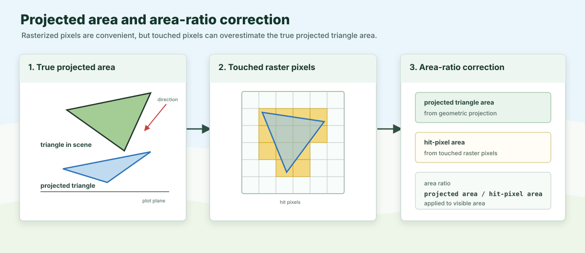

First-order interception is the light interception that occurs when rays of light hit objects in the scene. It is computed using a rasterization approach, by projecting the scene onto a 2D plane and counting the visible hits for each component (i.e. the projected area of the object that is visible from the source of light). The intercepted energy is computed from the visible projected area, the optical properties of the component, and the incoming irradiance.
By definition this step does not include any scattering, which is treated in a later step.
This is the Mir stage in the historical ARCHIMED software developed by Jean Dauzat (AMAP, CIRAD).
The canopy is treated as a set of surfaces, implemented as triangle meshes. Each leaf, stem, soil tile, or object contributes through its mesh faces.
ARCHIMED’s efficiency comes from a very specific compromise. It:
uses a finite number of incoming directions (e.g. 46 directions) instead of a continuous angular space
assumes rays are parallel inside each direction, which makes projection easy and fast
infers visibility from the ordered hits inside projected pixels (and scattering uses the same information)
This is much cheaper than general-purpose ray tracing, while remaining well matched to natural illumination by sun and sky.
For each direction, periodic scenes (toricity=true) project onto the horizontal plot tile, with cell widths fitted to that tile. Finite scenes (toricity=false) project onto a plane perpendicular to the light direction, with a canvas fitted to all scene geometry. Both use pixel_size as the requested ground resolution.
For finite scenes, the perpendicular raster pitches are p and p * s_z, where p = pixel_size and s_z is the upward direction's vertical component. A pixel therefore covers a square of side p when projected along the ray onto horizontal ground; its orientation follows the light azimuth. Visible areas are converted back to horizontal-equivalent areas before multiplication by horizontal irradiance. The original component mesh area remains the denominator for output fluxes.
Each pixel stores:
the first visible hit
and, when needed, the lower hits that matter for scattering or sensors
The pixel table is therefore both a visibility structure for first-order interception and a transfer structure reused later by scattering. This makes the model efficient, because it avoids recomputing visibility for each scattering iteration.
When only first-order interception is needed, ARCHIMED only keeps the upper visible hit for each pixel, and discards lower surfaces that will not receive direct light. This remains the compact upper-hit path when the surface has non-zero transparency: the retained hit's intercepted area and power are multiplied by 1 - transparency, while the transmitted share is not assigned to a lower hit. Transparency alone therefore does not switch the solver to a full-stack projection.
When scattering, virtual sensors, or light emitters are active, the solver keeps the full hit stack instead. A non-zero transparency keeps lower hits eligible for interception. Each eligible surface contributes its own 1 - transparency share of the incident pixel flux; the current ARCHIMED compatibility rule does not compound transmission from one transparent layer into the next.
transparency describes this first-order rule, not diffuse transmission. A Translucent component with zero transparency still redistributes scattered energy equally between its two sides. Opaque ground instead blocks both first-order and diffuse transmission and reflects into its outward hemisphere.
Rasterization introduces a known bias: a triangle rarely covers an integer number of pixels exactly. ARCHIMED compensates with the area-ratio correction.

The idea is:
area ratio = true projected area / hit-pixel areaPixel counts are then rescaled by that factor so the interception estimate stays closer to the true projected geometry.
When toricity=true, projected rays that exit the plot re-enter from the opposite side. The plot behaves like one repeating tile of an infinite canopy.
This is particularly useful for cropping systems with regular spatial patterns, such as annual row crops, orchards, or other repeated planting arrangements. Instead of simulating an entire field, only a single representative tile needs to be modeled while still capturing the light environment created by the surrounding canopy. This approximation works well when neighboring plants are sufficiently similar. However, if plant-to-plant phenotypic variability is large, explicitly representing each plant will generally produce more accurate results.
Toricity is one of the features that makes ARCHIMED well suited for large-scale agricultural simulations because it can approximate an effectively infinite canopy at a fraction of the computational cost, since only the geometry of a single tile needs to be simulated.
With toricity=false, each fitted perpendicular canvas covers the complete scene. Elevated geometry is therefore sampled even when its projection onto the horizontal ground would fall outside the plot. The physical soil and scene bounds are not enlarged. Maintaining the same ground resolution can require more pixels at shallow light elevations; changing the projection plane alone does not guarantee fewer rays. The configuration reference explains the pixel-spacing contract.
For each node and waveband, the first-order stage accumulates:
visible projected area
hit counts
intercepted power before scattering
After integration, those become the familiar exported variables:
Ri_PAR_0_f: first-order intercepted PAR flux (\(W \cdot m_{component}^{-2}\))
Ri_NIR_0_f: first-order intercepted NIR flux (\(W \cdot m_{component}^{-2}\))
Ri_PAR_0_q: first-order intercepted PAR quantity (\(J \cdot component^{-1} \cdot timestep^{-1}\))
Ri_NIR_0_q: first-order intercepted NIR quantity (\(J \cdot component^{-1} \cdot timestep^{-1}\))
smaller pixel_size improves geometric fidelity but increases runtime
area_ratio=true is usually the right choice, set it to false only for testing or debugging
disabling scattering still gives a complete and meaningful first-order light budget, but complex canopies may be significantly affected by scattering, so it is often better to keep it on
scenes near plot borders are especially sensitive to toricity, make sure you understand the implications of this option before using it